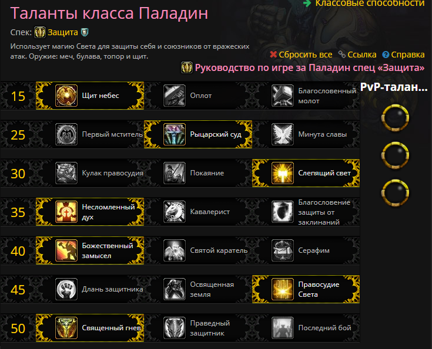

PALADINS
Главная
Таланты
Ротация
Аддоны
Таланты Паладину "Защита" стоит расставить следущим образом

Скрипт для аддона Pawn
:
( Pawn: v1: "NoxxicProtectionPaladinPvE": Class=Paladin, Spec=Protection, Strength=7.57, HasteRating=6.07, MasteryRating=5.26, Versatility=5.26, CritRating=4.85).